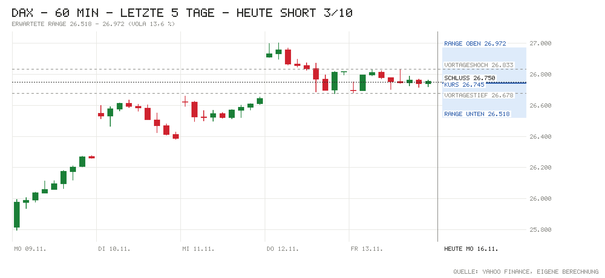

Tagesentscheidung ab 09:06 bis 17:30 Uhr
Den Ausschlag geben die schwachen Tech-Vorgaben (Nasdaq 100 am Freitag −1,22 %, Nasdaq-Future jetzt −0,84 %), der Einbruch in Tokio (Nikkei −2,42 %, Chipwerte) und Chinas Oktober-Daten, die durchweg enttäuschten. Vor den Nvidia-Zahlen am Dienstagabend dürften Käufer abwarten; Halbleiterwerte wie Infineon starten schwächer. Das wichtigste Gegenargument: Der DAX hält sich in der Indikation bemerkenswert stabil (−0,02 %) und steht weit über allen Durchschnitten, der große Trend ist Bull. Darum nur 3/10.
- Kurs um 09:06
- 26.745
- Erwartete Range
- 26.518 – 26.972
- Eingepreist (Tagesoption)
- ±0,85 %
Einschätzung vom Kurs um 09:06 (Median der Indikationen L&S, J.P. Morgan, UBS) bis zum Xetra-Schluss. Range = ±1 σ für die restliche Handelszeit aus der DAX-Tagesoption (ca. 68 %). Keine Anlageberatung.
Chart

Signale
| Signal | Wirkung | Stand und Einordnung |
|---|---|---|
| Vorgaben USA | Gegenwind | Freitag: S&P 500 −0,40 %, Nasdaq 100 −1,22 %, Dow +0,10 %. Futures jetzt: S&P −0,34 %, Nasdaq −0,84 % – der Tech-Druck hält an. |
| Eröffnung & erste Minuten | Neutral | Indikation 26.745 (−0,02 % zum Xetra-Schluss 26.749,95). Eröffnung und Hoch/Tief heute zum Abruf noch n/v. |
| Asien & China | Gegenwind | Nikkei −2,42 % (Chipwerte), Shanghai −0,87 %, CSI 300 −0,91 %; nur Hang Seng +0,43 %. |
| Datenüberraschungen | Gegenwind | China Oktober: Einzelhandel +0,4 % vs. Prognose 0,8 %, Industrie +4,8 % vs. 5,3 %, Investitionen −8,1 % vs. −7,0 %. Der heiße US-CPI vom 10.11. (Kern +0,3 % vs. 0,2 %) wirkt nach. |
| Zinserwartung | Gegenwind | Fed 09.12.: 107 % für +25 Bp., Januar 75 % für eine weitere Erhöhung. EZB-Einlagensatz 2,50 %. |
| Renditen | Gegenwind | US 10J 5,14 % live (−1 Bp.; offiziell +29 Bp. in einer Woche), Bund 10J 3,38 % (unverändert, Freitag laut Bundesbank +8 Bp.). |
| Kreditstress | Neutral | FRED n/v; Ersatz: HYG −0,05 %, LQD −0,23 % – kein Stress. |
| Öl & Dollar | Neutral | Brent 95,89 USD (+0,05 %) bleibt hoch; EUR/USD 1,1016 (−0,31 %) – der schwache Euro hilft Exporteuren. |
| Trend | Gegenwind | Weit über 21-T. (25.916), 50-T. (25.609) und 200-T.-Schnitt (24.973). Großer Trend Bull seit 11.11. – spricht gegen Short. |
| Positionierung | Neutral | COT 03.11.: Hedgefonds im S&P-Future netto −372.318 (+28.286), Asset Manager +928.584. Kein Extrem. |
| Unternehmensnachrichten | Gegenwind | Halbleiter vorbörslich schwächer (Infineon, außerhalb des DAX Aixtron, Suss, Siltronic) – Nachwirkung des Nvidia-Chefwechsels vor den Zahlen. |
| Profi-Sicht | Gegenwind | ING: Fed-Markt setzt auf Erhöhungen im Dezember und Januar, EUR/USD testet 1,10 – Bruch nach unten möglich. |
| Termine bis 17:30 | Neutral | Kein großer Datentermin heute (Nasdaq-Kalender ohne Einträge). Nvidia-Zahlen erst Dienstag nach US-Schluss. |
Großer Trend (3-Monats-Momentum)
- Stand
- Bull
- Seit
- 11.11. (6 Wechsel in 3 Monaten)
- Schluss 13.11.
- +2,38 % vs. Zins +0,60 %
- Heute dreht es bei Schluss unter
- 26.249 (jetzt −1,9 %)
Mit dem Kurs von 26.745 bleibt das Signal Bull; ein Dreh bräuchte einen Rutsch um rund 1,9 % – deutlich außerhalb der erwarteten Range. Bull = Rendite der letzten 3 Monate über dem Geldmarktzins, Bear = darunter. Regel: Rendite der letzten 63 Handelstage (≈ 3 Monate) gegen den EZB-Einlagensatz, jeden Tag zum Schluss neu entschieden, Zeitrahmen Tageskerzen (nach Antonacci 2014, dort monatlich über 12 Monate; täglich entschieden dreht es öfter falsch). Keine Anlageberatung.
Bilanz von gestern
13.11.: Short 3/10 – Richtung falsch, −34 Punkte (Kurs zur Notiz 26.716, Schluss 26.750, Hoch 26.833, Tief 26.678). Range ±210 um den Kurs zur Notiz getroffen (Bewegung +34); bisher 75 % von 8 Tagen getroffen (Soll ca. 68 %). Gesamt seit Start: 8 Einschätzungen, Richtung richtig 25 %, Summe −619 Punkte bis Schluss (Schnitt −77).
Marktlage
| Markt | Stand | Veränderung |
|---|---|---|
| DAX (Schluss 13.11.) | 26.749,95 | −0,08 % |
| DAX (Eröffnung heute) | n/v | n/v |
| DAX (jetzt, Kurs zur Notiz 09:06) | 26.745 | −0,02 % |
| S&P 500 (Schluss 13.11.) | 7.561,67 | −0,40 % |
| Nasdaq 100 (Schluss 13.11.) | 27.943,74 | −1,22 % |
| Dow Jones (Schluss 13.11.) | 52.347,55 | +0,10 % |
| US-Futures (S&P / Nasdaq) | 7.557,25 / 27.799,50 | −0,34 % / −0,84 % |
| Nikkei 225 | Eröffnung 61.348 → Schluss 59.662 | −2,42 % |
| Shanghai Composite | Eröffnung 3.612 → Schluss 3.603 | −0,87 % |
| CSI 300 | Eröffnung 3.985 → Schluss 3.980 | −0,91 % |
| Hang Seng | Eröffnung 23.709 → aktuell 23.739 | +0,43 % |
| EUR/USD | 1,1016 | −0,31 % |
| Brent (USD/Barrel) | 95,89 | +0,05 % |
| Gold (USD/Unze) | 3.857,20 | −0,75 % |
| VIX (Schluss 13.11.) | 19,30 | +3,21 % |
China: Festland schwächer, weil die Oktober-Daten zu Einzelhandel, Industrie und Investitionen alle die Erwartungen verfehlten (ING: „besorgniserregender Start ins vierte Quartal“). Farben bei Brent und VIX nach Wirkung auf Aktien. DAX-Eröffnung lag zum Datenabruf (Yahoo, bis 15 min verzögert) noch nicht vor.
Anleihen & Zinsen
| Markt | Stand | Veränderung |
|---|---|---|
| Bund 2J | 3,13 % | ±0 Bp. (vs. Bundesbank 13.11.) |
| Bund 10J | 3,38 % | ±0 Bp. |
| US-Treasury 2J | 4,86 % (live) | −2 Bp. (offiziell 13.11.: 4,88 %) |
| US-Treasury 10J | 5,14 % (live) | −1 Bp.; 1 Woche (offiziell): +29 Bp. |
| Fed, Sitzung 09.12. | Erhöhung um 25 Bp. erwartet | 107 %; Jan. 75 % |
| EZB-Einlagensatz | 2,50 % | zuletzt +25 Bp. (16.09.) |
| Euro-Hochzins-Aufschlag | n/v (FRED) | n/v |
| US-Hochzins (Ersatz: HYG) | 76,94 USD | −0,05 % (Tag) |
Termine heute
- ganztags Kein großer Konjunkturtermin (Nasdaq-Kalender ohne Einträge); Kapitalmarkttag Uniper
- Woche Di. nach US-Schluss: Nvidia-Zahlen · Mi.: Fed-Protokoll (Oktober) · Do.: Börsengang Anthropic · Do./Fr.: Lagarde
Nachrichten zu DAX-Werten
- Infineon: Vorbörslich schwächer, wie die Chipwerte in Tokio. Einschätzung: belastet heute, bis die Nvidia-Zahlen Klarheit bringen.
- Nvidia (Umfeld): Zahlen am Dienstag nach US-Schluss, vorgelegt von Interimschefin Colette Kress nach Huangs Rücktritt; erwartet rund 108,85 Mrd. USD Umsatz. Einschätzung: Zurückhaltung bei SAP, Infineon und Siemens Energy bis dahin.
- Siemens Energy / Rheinmetall: Vorwoche Siemens Energy rund +11 % nach starken Zahlen, Rheinmetall rund −6 % auf den tiefsten Stand seit Februar 2025. Einschätzung: heute keine neuen Meldungen gefunden; Gewinnmitnahmen bei Siemens Energy möglich (eigene Einschätzung).
Profi-Sicht & Positionierung
- ING THINK: EUR/USD läuft auf die Marke 1,10 zu; in einer ruhigen US-Datenwoche könnte sie halten, das Risiko eines Bruchs ist aber deutlich. Der Fed-Markt setzt auf zwei Erhöhungen um je 25 Bp. im Dezember und Januar (FX Daily). Chinas Oktober-Daten verfehlten alle Erwartungen, es braucht mehr Stützung (China-Analyse).
- Positionierung (COT, Stand 03.11.): Hedgefonds im S&P-Future netto −372.318 (+28.286), Asset Manager +928.584 (+5.135); Treasuries: Hedgefonds bauen Short aus (−35.035). Kein Extrem.
Quellen
- Marktdaten per Skript: Amber Terminal / Yahoo Finance (Kurse, Futures, HYG/LQD), onvista (Indikationen, VDAX), Eurex (DAX-Tagesoption ODAP), Nasdaq (Kalender), CNBC / Bundesbank / US-Treasury (Renditen), CFTC (COT), ING THINK; FRED (Kreditaufschläge) nicht erreichbar
- onvista/dpa-AFX: Wochenausblick – Anleger warten nach Dax-Rekord auf Nvidia-Zahlen und Anthropic
- dpa-AFX: Aktien Frankfurt Ausblick – Dax auf hohem Niveau stabil, Nvidia-Zahlen im Fokus
- Investing.com: Nvidia-Aktie – Zahlen am Dienstag
- Wochenausblick: Infineon, Siemens Energy und Rheinmetall unter der Lupe
- ING THINK: FX Daily – Time for a break below 1.10 in EUR/USD?
- ING THINK: China’s October domestic activity data disappoints across the board